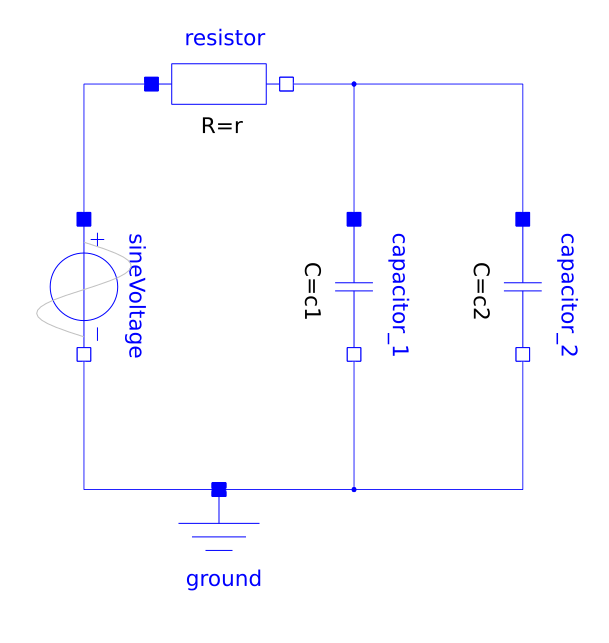
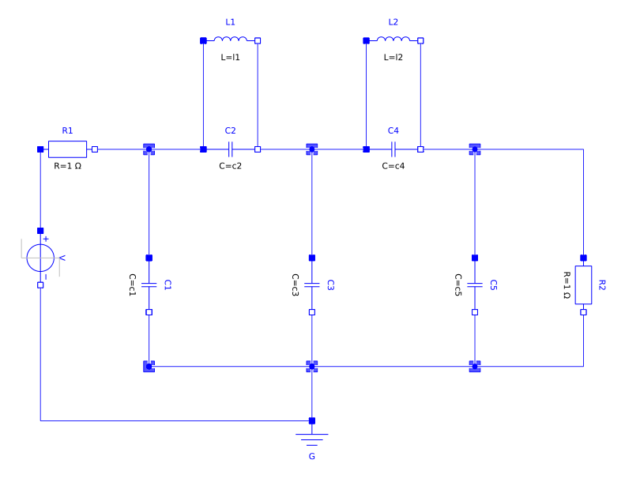
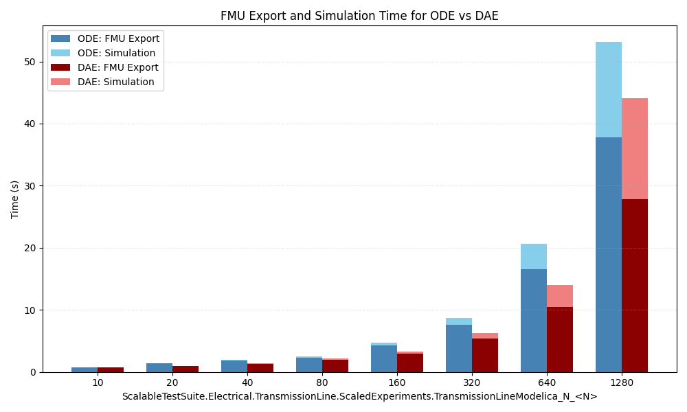

This layered standard on top of FMI 3.0 defines how to exchange dynamic models in differential algebraic equation form.
| Although the document refers to version 3.0 of the FMI standard, everything described in this document also applies to all subsequent minor versions. For further information on compatibility, see section Versioning and Layered Standards in the FMI 3.0 specification. |
Copyright © 2025 The Modelica Association Project FMI.
This document is licensed under the Attribution-ShareAlike 4.0 International license. The code is released under the 2-Clause BSD License. The license text can be found in the LICENSE.txt file that accompanies this distribution.
1. Introduction
1.1. Intent of this Document
A differential-algebraic system of equations (DAE) is a system of equations that either contains differential equations and algebraic equations, or is equivalent to such a system [1].
-
Avoid the requirement of index reduction inside of FMUs.
-
This may improve accuracy due to better drift handling.
-
-
Avoid local nonlinear equation solvers inside of FMUs.
-
This may improve accuracy and avoid problems with different local and global error tolerances.
-
-
Preserve the sparseness of DAE systems which is lost for the corresponding reduced ODE systems.
-
This may improve the performance by usage of the sparseness.
-
-
Allow connections between constraint FMUs.
-
Connecting reduced ODE FMUs may lead globally to a non-solvable (singular) system but not for unreduced DAE FMUs.
-
1.2. How to read this Document
1.3. Overview
2. Common Concepts
Mathematical Notation
| Variable | Description |
|---|---|
A vector of real continuous-time variables representing the continuous-time algebraic variables. |
DAE representation
There are different forms of DAEs.
For simplicity discontinuous states are currently disregarded.
Fully-Implicit DAE
The generic fully-implicit DAE, or implicit DAE, formulation:
where \(z(t)\) represents state and additional variables and \(t\) is time.
A similar and sometimes more useful representation:
with dynamic variables \(x(t)\), algebraic variables \(y(t)\) and time \(t\).
Note that \(x(t)\) is not necessarily the state variable, more on this in section 2.1.1.
Semi-Explicit Index 1 / Hessenberg index 1 DAE
The semi-explicit index 1, also called Hessenberg index 1, DAE representation
with \(g\) solvable for \(y\), \(det \left( \frac{\partial}{\partial y}g\right) \neq 0\).
Here \(f\) is called the differential equations and \(g\) the algebraic equations.
Relationship between fully-implicit and semi-explicit DAE
A fully implicit DAE
can always be rewritten as a semi-explicit DAE by introducing a new algebraic variable \(x^{\prime}\)
Semi-Explicit DAE
The semi-explicit DAE representation
with \(g^1\) solvable for \(y\), \(det \left( \frac{\partial}{\partial y}g^1\right) \neq 0\) and \(\left\{ \frac{d}{dt} g_i^k \right\} \subseteq \{ g_i^{k-1}\}, \; k > 1\).
Mass matrix DAE
where mass matrix \(M\) is singular.
An equivalent explicit formulation:
See [cui2020mass].
Linear time-invariant DAE
where matrix \(E\) is singular.
Indices
There are multiple, sometimes closely related, definitions of indices for DAE systems. Usually these indices are a measure of how far from an ODE the DAE is.
Differential Index
The minimum number of times a DAE
has to be differentiated with respect to time \(t\) to be able to determine \(\dot{x}(t)\) as a function of \(t\) and \(x\) is called the differential index.
Perturbation Index
The perturbation index measures the sensitivity of the solution of a DAE to perturbations of its right-hand side. The DAE
has perturbation index \(p\) along a solution \(x(t)\) if \(p\) is the smallest non-negative integer such that the solution \(\tilde{x}(t)\) of the perturbed system
satisfies
for some constant \(C\) and a sufficiently small and smooth perturbation \(\delta(t)\). A DAE with perturbation index greater than 1 is called a higher-index DAE.
Example of Structural Singularity
[cellier2006continuous, chapter 7.7 Structural Singularity Elimination] provides a simple electric circuit model that is a higher-index DAE.

The circuit has two capacitors in parallel and can be represented with equations:
When both capacitive voltages \(v_1\) and \(v_2\) are chosen as state variables, equation \(v_2 = v_1\) has no unknowns left, so it is a constraint equation.
There are different ways to solve this. The modeler could change the causality or exporting tools can try to reduce the perturbation index symbolically [2] to end up with a consistent initialization for the system.
Hello World DAE Example
A simple initial-value problem
with variables \(x,y,z \in \mathbb{R}\) and start condition
at time \(t_0\). For this specific example a start condition \(x_0\) is sufficient to calculate consistent start values. The independent variable (usually time) \(t\) is omitted for simplicity.
Hello World DAE - Fully-Implicit DAE
The fully-implicit representation
is given by
Hello World DAE - Semi-Explicit DAE
The semi-explicit representation
is given by
Hello World DAE - Explicit ODE
This simple system could also be transformed into an explicit ODE formulation
with local variables \(y\) and \(z\)
and exported as an ODE ModelExchange FMU.
3. Use Cases
3.1. Generic DAE Use Case
There are a number of possible reasons to export a model as a system of differential-algebraic equations (DAE) instead of a system of ordinary differential equations (ODE):
-
The exporting tool doesn’t support methods to transform a DAE into ODE representation.
-
The time needed to perform symbolic transformation to ODE representation takes a significant amount of time for large systems.
-
Large system models are usually characterized by a high degree of sparsity. Some DAE solvers can utilize sparsity to reduce simulation time.
-
More efficient simulation of models with large algebraic loops for DAE representation.
See [braun2017solving].
3.1.1. Modelica Example CauerLowPassAnalog
The Modelica model Modelica.Electrical.Analog.Examples.CauerLowPassAnalog from the Modelica Standard Library [3]

Modelica.Electrical.Analog.Examples.CauerLowPassAnalog.has structural singularities.
To produce a complete and consistent set of initial conditions for the DAE, exporting tools usually use a symbolic index reduction algorithm.
The model has nine state candidates
1: L1.v (unit = "V" stateSelect=StateSelect.never ) "Voltage drop of the two pins (= p.v - n.v)" type: Real 2: L2.v (unit = "V" stateSelect=StateSelect.never ) "Voltage drop of the two pins (= p.v - n.v)" type: Real 3: C2.v (start = 0.0 unit = "V" ) "Voltage drop of the two pins (= p.v - n.v)" type: Real 4: C4.v (start = 0.0 unit = "V" ) "Voltage drop of the two pins (= p.v - n.v)" type: Real 5: L1.i (start = 0.0 unit = "A" fixed = true ) "Current flowing from pin p to pin n" type: Real 6: L2.i (start = 0.0 unit = "A" fixed = true ) "Current flowing from pin p to pin n" type: Real 7: C1.v (start = 0.0 unit = "V" fixed = true ) "Voltage drop of the two pins (= p.v - n.v)" type: Real 8: C5.v (start = 0.0 unit = "V" fixed = true ) "Voltage drop of the two pins (= p.v - n.v)" type: Real 9: C3.v (start = 0.0 unit = "V" fixed = true ) "Voltage drop of the two pins (= p.v - n.v)" type: Real
and four constraint equations
1: L2.v = C3.v - C5.v 2: L1.v = C1.v - C3.v 3: C4.v = L2.v 4: C2.v = L1.v
Modelica tools that want to export an ODE ModelExchange FMU need to reduce the perturbation index to index 1 to end up with an ODE representation of the DAE system.
One option to achieve this is the so called dummy derivative method.
From the set of state candidates, five state variables are chosen (e.g. C1.v, C3.v, C5.v, L1.i, L2.i) and the constraint equations
are differentiated
which results in four additional dummy states ($DER.L1.v, $DER.L2.v, $DER.C2.v, $DER.C4.v).
Here the Modelica keyword stateSelect influences how variables are picked.
3.1.2. Scaling Power Grids Example
For simulation models representing power grids on a national or larger scale, traditional ODE solvers may struggle with convergence and performance. Also, the time needed to perform symbolic transformation from DAE to ODE is growing with the number of equations.
See for example Modelica models ScalableTestSuite.Electrical.TransmissionLine.ScaledExperiments.TransmissionLineModelica_N_10 to ScalableTestSuite.Electrical.TransmissionLine.ScaledExperiments.TransmissionLineModelica_N_1280 from ScalableTestSuite [4].

The simulation was performed using OpenModelica v1.27-dev-92 with the following settings:
-
DAE export:
--daeMode -
Method: Sundials IDA [5]
Since OpenModelica does not support FMI 3.0 or FMI-LS-DAE at the time of writing, the export and simulation times were measured using OpenModelica’s default C export and simulation.
4. Layered Standard Manifest File
This layered standard requires the use of a layered standard manifest file and it shall be stored inside the FMU at the following path: /extra/org.fmi-standard.fmi-ls-dae/fmi-ls-manifest.xml.
[Add figure here] shows the root element fmiLayeredStandardManifest.
Two additional elements - <AlgebraicVariables> and <ModelStructure> - are included in the layered standard manifest file to describe the DAE formulation.
| Element | Description |
|---|---|
List of all algebraic variables exposed for the DAE formulation. |
|
Defines the structure of the DAE formulation for the model.
Especially, the ordered lists of |
|
Optional annotations for the top-level element. |
The XML attributes of <fmiLayeredStandardManifest> are:
| Attribute | Namespace | Value | Description |
|---|---|---|---|
|
|
|
Name of the layered standard in reverse domain name notation. |
|
|
|
Version of the layered standard. This layered standard uses semantic versioning, as defined in [PW13]. |
|
|
|
String with a brief description of the layered standard that is suitable for display to users. |
4.1. Algebraic variables
The element <AlgebraicVariables> defines the list of the algebraic variables.
| Element | Description |
|---|---|
|
The list of all algebraic variables present in the |
Each [AlgebraicVariable] has only one attribute defining the value reference.
| Attribute | Description |
|---|---|
|
The value reference for the algebraic variable present in the |
4.2. Model Structure
The structure of the model for the DAE-formulation is defined in element <ModelStructure>.
It defines the dependencies between variables. The <ModelStructure> element is extended with an additional element - <Residual> - and the optional dependencies can now include algebraic variables.
An FMU that follows this layered standard must expose all residuals with the <Residual>.
It should be noted that the ModelStructure below is not a straight extension of the ModelStructure from the core standard, since it e.g. does not specify how the elements ClockedState or EventIndicator are affected by the DAE-formulation. That is also why some elements in Table 6 are defined in a similar way to the core standard, with the exception that references to concepts in co-simulation, clocks, and events are excluded. Moreover, notes and examples that are already present in the core standard are omitted here.
Similar to the ModelStructure from the core FMI-standard, the optional part of the model structure defines in which way derivatives, outputs, and initial unknowns depend on inputs and/or parameters, and continuous-time states. Therefore the concepts from Model Exchange in the core-standard that are applicable to the DAE-formulation are repeated. The unknowns are extended with the <Residual> element, and each unknown can now also depend on <AlgebraicVariables>.
| Element | Description |
|---|---|
|
Ordered list of all outputs, in other words, a list of value references where every corresponding variable must have [causality] = [output] (and every variable with [causality] = [output] must be listed here).
Attribute |
|
Ordered list of value references of all derivatives of continuous states. The order defined by this list defines the order of the elements for [fmi3GetContinuousStates], [fmi3SetContinuousStates], and [fmi3GetContinuousStateDerivatives]. The corresponding continuous-time states are defined by attribute [derivative] of the corresponding variable state-derivative element. The functional dependency is defined as: |
|
Ordered list of residual equations (constraints). Each The functional dependency is defined as: |
|
Ordered list of all exposed unknowns in [InitializationMode]. This list consists of all variables which:
The resulting list is not allowed to have duplicates (for example, if a [state] is also an [output], it is included only once in the list). \({\mathbf{v}_{\mathit{initialUnknowns}} := \mathbf{f}_{\mathit{init}}(\mathbf{u}_c, \mathbf{u}_d, t_{\mathit{start}}, \mathbf{v}_{\mathit{initial=exact}})}\) Since, |
Elements <Output>, <ContinuousStateDerivative>, and <InitialUnknown> have (partially) the following attributes. The <Residual><Formulation>
| Attribute | Description |
|---|---|
|
The value reference of the unknown \({v_{\mathit{unknown}}}\). |
|
Optional attribute defining the algebraic dependencies as list of value references of the unknown \({\mathbf{v}_{\mathit{unknown}}}\) directly with respect to \({\mathbf{v}_{\mathit{known}}}\). For a real valued unknown and a real valued known, if the known is not listed among the dependencies then the partial derivative of the unknown with respect to that known is identically zero. If dependencies is not present, it must be assumed that the unknown depends on all knowns. If dependencies is present as empty list, the unknown depends on none of the knowns. Otherwise the unknown depends on the knowns defined by the given value references. Knowns \({\mathbf{v}_{\mathit{known}}}\) in [ContinuousTimeMode] (ME) for
Knowns \({\mathbf{v}_{\mathit{known}}}\) in [InitializationMode] (for elements
|
|
If
The following
The following
|
4.2.1. Formulation
Each <Formulation><Residual>
| Attribute | Description |
|---|---|
|
The value reference of the residual variable \({v_{\mathit{unknown}}}\), which must be present in the |
|
Optional attribute indicating the DAE index of the original constraint, i.e., how many times this particular equation must be differentiated in order to solve for a particular derivative. |
|
Optional attribute defining the algebraic dependencies as a list of value references of the knowns \({\mathbf{v}_{\mathit{known}}}\) that this formulation directly depends on. Knowns \({\mathbf{v}_{\mathit{known}}}\) in [ContinuousTimeMode] (ME) for
If |
|
See the description of |
Example
Consider the following index 2 DAE system:
\(r_1 = C_1\frac{dx_1}{dt} + y = 0\)
\(r_2 = C_2\frac{dx_2}{dt} - y + 1 = 0\)
\(r_3 = x_1 - x_2 = 0\)
Assume it is exported as a DAE FMU with the following variables:
| Variable | valueReference |
|---|---|
\(x_1\) |
1 |
\(x_2\) |
2 |
\(y\) |
3 |
\(\frac{dx_1}{dt}\) |
4 |
\(\frac{dx_2}{dt}\) |
5 |
\(r_1\) |
6 |
\(r_2\) |
7 |
\(r_3\) |
8 |
\(\frac{dr_3}{dt}\) |
9 |
Case 1: No structural analysis. The importer is responsible to figure out how to solve the system:
<ModelStructure>
<Residual> <!-- r1 -->
<Formulation
valueReference="6"
dependencies="3 4"
dependenciesKind="dependent dependent"/>
</Residual>
<Residual> <!-- r2 -->
<Formulation
valueReference="7"
dependencies="3 5"
dependenciesKind="dependent dependent"/>
</Residual>
<Residual> <!-- r3 -->
<Formulation
valueReference="8"
dependencies="1 2"
dependenciesKind="dependent dependent"/>
</Residual>
</ModelStructure>Case 2: The FMU additionally indicates that \(r_3\) is a constraint of index 2, i.e., it must be differentiated twice to obtain an index 1 system. This gives the importer structural information to know to apply a solver able to handle index 2 problems:
<ModelStructure>
<Residual> <!-- r1 -->
<Formulation
valueReference="6"
dependencies="3 4"
dependenciesKind="dependent dependent"/>
</Residual>
<Residual> <!-- r2 -->
<Formulation
valueReference="7"
dependencies="3 5"
dependenciesKind="dependent dependent"/>
</Residual>
<Residual> <!-- r3, index=2 signals this constraint needs 2 differentiations -->
<Formulation
index="2"
valueReference="8"
dependencies="1 2"
dependenciesKind="dependent dependent"/>
</Residual>
</ModelStructure>Case 3: The FMU exposes both \(r_3\) and its time derivative \(\dot{r}_3\) grouped within the same <Residual>, which indicates that these are the original constraint and its differentiated form. The importer can use this grouping to apply the dummy derivatives algorithm or use \(r_3\) as a drift-correction projection when integrating the index 1 formulation:
\(r_3 = x_1 - x_2 = 0\)
\(\dot{r}_3 = \frac{dx_1}{dt} - \frac{dx_2}{dt} = 0\)
<ModelStructure>
<Residual> <!-- r1 -->
<Formulation
valueReference="6"
dependencies="3 4"
dependenciesKind="dependent dependent"/>
</Residual>
<Residual> <!-- r2 -->
<Formulation
valueReference="7"
dependencies="3 5"
dependenciesKind="dependent dependent"/>
</Residual>
<Residual> <!-- r3 and its derivative, grouped as related formulations -->
<Formulation <!-- r3 -->
index="2"
valueReference="8"
dependencies="1 2"
dependenciesKind="dependent dependent"/>
<Formulation <!-- der(r3) -->
index="1"
valueReference="9"
dependencies="4 5"
dependenciesKind="dependent dependent"/>
</Residual>
</ModelStructure>The API for partial derivative, GetDirectionalDerivative and/or GetAdjointDerivative could be used with this structure to apply the dummy derivatives algorithm, or the index 2 constraint can serve as a projection constraint when integrating the index 1 formulation.
References
-
[cellier1993automated] Cellier, Francois E., and Hilding Elmqvist. "Automated formula manipulation supports object-oriented continuous-system modeling". IEEE Control Systems Magazine 13.2 (1993): 28-38.
-
[braun2017solving] Willi Braun, Francesco Casella, and Bernhard Bachmann. "Solving Large-Scale Modelica Models: New Approaches and Experimental Results Using OpenModelica". Linköping Electronic Conference Proceedings (Print), pp. 557-563. Linköping University Electronic Press, 2017. https://re.public.polimi.it/bitstream/11311/1065357/1/2017-BraunCasellaBachmann.pdf
-
[casella2015simulation] Casella, Francesco. "Simulation of Large-Scale Models in Modelica: State of the Art and Future Perspectives". Proceedings of the 11th International Modelica Conference, pp. 459-468, 2015. https://dx.doi.org/10.3384/ecp15118459